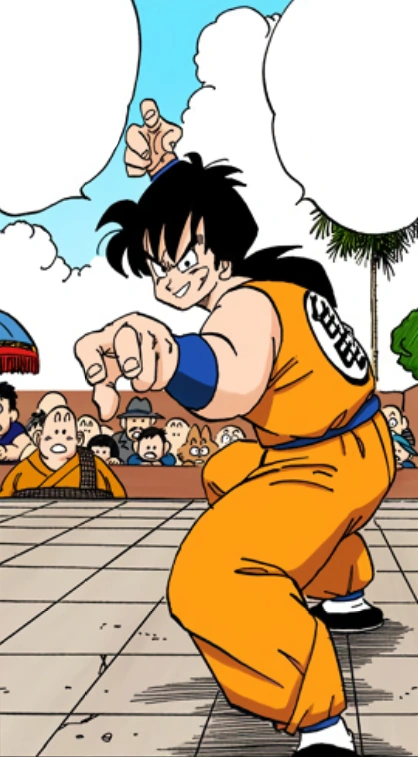

Yamcha (ヤムチャ Yamucha) is a major deuteragonist in the Dragon Ball manga and in the anime Dragon Ball, and later a supporting tritagonist in Dragon Ball Z and Dragon Ball Super, with a few appearances in Dragon Ball GT.
He is a former boyfriend of Bulma and the lifelong best friend of Puar.
A former desert bandit, Yamcha was once an enemy of Goku, but quickly reformed and became a friend and ally.
Brave, boastful, and dependable, Yamcha is a very talented martial artist and one of the most powerful humans on Earth, possessing skills and traits that allow him to fight alongside his fellow Z Fighters when major threats loom.
Although he retired by the latter half of Dragon Ball Z, due to being largely outclassed by both his allies (namely the Saiyans) and their enemies, he is always present whenever a new threat approaches and will occasionally lend a helping hand, thus proving himself to be a powerful ally in his own right.
Yamcha is originally characterized as a deadly warrior, who fears nothing but talking to women.
After befriending Goku and the others, his personality remains mostly the same, but becomes very caring and considerate of the people he protects.
He is showcased as a courageous warrior who strives to be the best, but is unable to reach this status, a fact that appears to plague him.
He has a great network of information, recognizing Goku's Power Pole as Grandpa Gohan's during their first fight.
Yamcha is a huge fan of the World Martial Arts Tournament and has always wanted to compete and someday win.[23]
It is likely this is why he has knowledge of famous fighters like Grandpa Gohan, Monster Carrot, Bacterian, and King Chappa.
Whenever the tournament date neared, Yamcha would always go through vigorous training and invent a new technique like the Blinding Wolf Fang Fist, Neo Wolf Fang Fist, and the Spirit Ball.
He is the second fighter to learn the Kamehameha since the beginning of Dragon Ball (after Goku).
In early Dragon Ball Z, he shows great pride in defending Earth from the Saiyans, willing to put his life on the line to stop them, which he evidently does.
Although he is killed, he dies a hero's death.
After returning from the dead, he prepares to battle the Androids.
In early Dragon Ball, Yamcha had a fear of women and tended to get terrified at the sight and touch of a woman, although he seemingly got over this after meeting Bulma when they were 16.
They have an on-and-off again relationship for several years and despite her supposed mistreatment towards him, he still loved her.
However, while the specifics are unknown, Bulma felt Yamcha was interested in other women.
During the three years prior to the Androids' arrival, he and Bulma break up for good (though they remain friends) and she ends up with Vegeta, which frustrated him, especially at Vegeta for fathering her son, Trunks.
His resentment towards Vegeta is apparent in the Androids and Cell Games Saga, as he speaks bitterly that he is not Trunks' father and mocked Vegeta for being beaten by Cell.
However, after seeing Vegeta's emotional reaction to Future Trunks' death, Yamcha forgave him and is later seen being friendly with Vegeta.
Yamcha is also on good terms with Trunks and tells Future Trunks that his father really loved him.[24]
After being nearly killed by Dr. Gero, he takes more of a comical approach and becomes largely outmatched in battle due to the ever-growing power of the enemies the Z Fighters face.
It appears whatever passion and resolve for fighting he had disappeared with the emergence of the Super Saiyans, who severely outclass him in fighting ability, and he eventually comes to accept this.
After realizing that his enemies severely overpower him, unlike Tien, who wishes to fight despite the odds, Yamcha accepts that his contribution would be futile, and instead opts to stand aside and keep watch, instead of engaging in combat.
Despite this fact, he remains a trusted ally and will fight on occasion when needed.
During the latter half of Dragon Ball Z, he retires from fighting, but continues training and goes off on his own.
In Dragon Ball Super, it is revealed Yamcha actually has grown stronger and has been training.
However, he uses his strength for baseball rather than fighting at this time.
During the Universal Survival Saga, Yamcha overhears Goku and Gohan's conversation, which outright implies that his passion for fighting still lingers (eagerly heading home to wait and be recruited by Goku for the Tournament of Power).
In the Galactic Patrol Prisoner Saga, Yamcha returns to the battlefield and is excited to help defend Earth from Moro and his Galactic Brigade.
When up against three Moro Corps' members (one of whom labeled him as being weak), he corrects them by saying that he's one of the three strongest Earthlings, showcasing his pride of being a powerful Earthling martial artist.
However, he still takes a generally comical role when it comes to important battles, somewhat similar to Krillin, and is rather fearful of some of the villains the Dragon Team has faced in the past.
During the Supreme Kai of Time Saga from Super Dragon Ball Heroes, he is horrified at being attacked by Mecha Frieza, and in Dragon Ball FighterZ, he desperately attempts to ease the tension between Goku and Frieza to no avail, leading to Frieza calling him a sensible creature (and, peculiarly, a handsome one).
Despite his more comical and cowardly demeanor, Yamcha will still step up to fight for peace when needed such as when Kid Buu attacked Other World and saving Vidro from Hit (in the anime) and Meta-Cooler (in the manga) despite being enemies which earned him the respect and infatuation of Hearts and Vidro respectively.